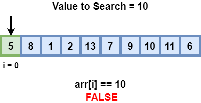

Algorithms
Introduction
What is an algorithm?
An Algorithm is a list of instructions given to a computer to complete a particular task.
It is a set of steps that the computer must follow to reach a goal. An example of this would be baking a cake. The recipe would look something like:
- Step 1: Gather the ingredients (Flour, Eggs, Sugar, Butter, Milk).
- Step 2: Measure the ingredients to exact quantities.
- Step 3: Mix the ingredients to make the batter.
- Step 4: Put the batter in the oven and bake.
- Step 5: Set a timer
- Step 6: When the timer is done, remove and serve

Algorithms are mini-instruction manuals given to computers to solve a problem or manipulate data.
Algorithms in Computers
Algorithms in computers are often take an input, executes a series of steps in the order we specify and provide an output.
An example would be a finding the n-th power of a number. Lets say we take an input from the user and calculate and give the output. First we ask the user for the input for the first number, n, lets say it's 4. Then we ask for the second input, the power number, p, lets say this is 3. Next we multiply the first number n (4) by itself the p times (3). So,
4 * 4 * 4 = 64
We finally submit the following output back to the user.
Essential Algorithms
The first steps to understanding algorithms comes from learning about two specific types of algorithms.
- Searching Algorithms
- Sorting Algorithms
Searching Algorithms
Key Searching algorithms are:
- Linear Search
- Binary Search
Linear Search

Linear Search is a simple algorithm used to find an location or index of a number in an array.
It works by looping over an array, checking each element if it matches the element to be searched. We use a flag variable to track wheter we have found the number. The flag value is set to 0 initially. If the element is found, it breaks the loop and sets the flag to 1. Outside the loop we check if the flag is 0 or 1. If the flag is true, we print the index.
For this example, we'll be using the following array: 14 73 36 11 33
The element to be searched: 11
> **14** 74 36 11 33 -- Isn't the number
>
> 14 **74** 36 11 33 -- Not the number, go to next
>
> 14 74 **36** 11 33 -- Skip, not the number
>
> 14 74 36 **11** 33 -- Found the number, break the loop and return
C Program:
int main()
{
int nums[] = {14,73,36,11,33};
int array_size = sizeof(nums)/sizeof(nums[0]);
int search_key = 11;
int flag = 0;
int i; //NOTE that integer i is declared outside the for loop, if it is defined in the for loop, the value cannot be accesed outside the loop in the if statement
for(i=0;i<array_size;i++) {
if(nums[i]==search_key) {
flag = 1;
break;
}
}
if(flag==1) {
printf("Number found at index: %d", i);
}
else {
printf("Number not found");
}
return 0;
}
Binary Search

Binary search looks for a particular item by comparing the middle most item of the collection. If a match occurs, then the index of item is returned. If the middle item is greater than the item, then the item is searched in the sub-array to the left of the middle item. Otherwise, the item is searched for in the sub-array to the right of the middle item. This process continues on the sub-array as well until the size of the subarray reduces to zero
Binary search is done in 4 steps:
- Compare key with the middle element.
- If key matches with the middle element, we return the mid index.
- Else If key is greater than the mid element, then key can only lie in the right half subarray after the mid element. So we recur for the right half.
- Else (key is smaller) recur for the left half.
NOTE: Binary Search has a prerequisite that before searching the array must be sorted.
C Program:
int main()
{
int nums[] = {11,14,33,36,73}; //We're using an already sorted array
int array_size = sizeof(nums)/sizeof(nums[0]);
int search_key = 14;
int flag = 0;
int high = array_size;
int low = 0;
int mid = 0; //Mid also variable outside while loop, so can be accessed
while(low<=high) {
mid = (low + high) / 2;
printf("%d ",mid);
if (nums[mid]==search_key) {
flag = 1;
break;
}
if(nums[mid]>search_key) {
high = mid - 1;
}
else if(nums[mid]<search_key) {
low = mid + 1;
}
}
if(flag==1) {
printf("Number found at index: %d", mid);
}
else {
printf("Number not found");
}
return 0;
}
Sorting Algorithms
Sorting is any process of arranging items systematically in sequence ordered by according to some criteria
A sorting algorithm is an important first step in learning to solve more complex problems. It often involves an algorithm that puts elements in a numerical or lexicographical order.
An example would be sorting a list of nums of people in ascending order or descending order. Another example would be sorting a list of names, alphabetically.
This session will focus on three specific algorithms:
- Selection Sort
- Bubble Sort
- Insertion Sort
Selection Sort

The selection sort algorithm sorts an array by repeatedly finding the minimum element (considering ascending order) from unsorted part and putting it at the beginning. The algorithm uses a single array data structure to store the values.
The array gets divided into two halves, the sorted subarray and the unsorted subarray. In the case of sorting number in ascending order, during each iteration, a number from the unsorted half is moved to the sorted half.
The algorithm iterates past each element one by one, for each iteration it finds the smallest element in the next half and swaps it with the current element. The following example illustrates this.
We'll be sorting the following list in ascending order: 43 28 84 19 64
> arr[] = 43 28 84 19 64
>
> # Find the minimum element in arr[0...4] and swap it with the first element
>
> ***43** 28 84 19 64* --> **19** 28 84 43 64
>
> # Go to the next element
> # Find the minimum element in arr[1...4] and swap it with the first element of arr[1...4]
>
> 19 ***28** 84 43 64* --> 19 **28** 84 43 64
>
> # Go to the next element
> # Find the minimum element in arr[2...4] and swap it with the first element of arr[2...4]
>
> 19 28 ***84** 43 64* --> 19 28 **43** 84 64
>
> # Go to the next element
> # Find the minimum element in arr[3...4] and swap it with the first element of arr[3...4]
>
> 19 28 43 ***84** 64* --> 19 28 28 **64** 84
C Program:
int main()
{
int nums[] = {43,28,84,19,64};
int array_size = sizeof(nums)/sizeof(nums[0]);
int temp,min_ind;
for(int i=0;i<array_size;i++) {
min_ind = i;
for(int j=i+1;j<array_size;j++) {
if(nums[j]<nums[min_ind]) {
min_ind = j;
}
}
//Swap the two elements
temp = nums[i];
nums[i] = nums[min_ind];
nums[min_ind] = temp;
}
for(int i=0;i<array_size;i++) {
printf("%d ", nums[i]);
}
return 0;
}
Bubble Sort

Bubble Sort is the simplest sorting algorithm that works by repeatedly swapping the adjacent elements if they are in wrong order.
It sorts in multiple passes(or iteration), repeating until it undergoes no swaps. At the end of each swap the largest element of each pass is gets pushed to the right of the array. We'll be taking the same array as before and sorting it in ascending order. 43 28 84 19 64
> arr[] = 43 28 84 19 64
>
> # First Pass:
>
> **43 28** 84 19 64 --> **28 43** 84 19 64 // Each 2 elements are compared and swapped if the first is smaller than the second
>
> 28 **43 84** 19 64 --> 28 **43 84** 19 64
>
> 28 43 **84 19** 64 --> 28 43 **19 84** 64
>
> 28 43 19 **84 64** --> 28 43 19 **64 84** // 84 Being the biggest element is pushed to the end and fixed
>
> # Second Pass:
>
> **28 43** 19 64 84 --> **28 43** 19 64 84
>
> 28 **43 19** 64 84 --> 28 **19 43** 64 84
>
> 28 19 **43 64** 84 --> 28 19 **43 64** 84
>
> 28 19 43 **64 84** --> 28 19 43 **64 84** // 64 being the next biggest is pushed to the right most
>
> Third Pass:
>
> **28 19** 43 64 84 --> **19 28** 43 64 84
>
> 19 **28 43** 64 84 --> 19 **28 43** 64 84
>
> 19 28 **43 64** 84 --> 19 28 **43 64** 84
>
> 19 28 43 **64 84** --> 19 28 43 **64 84**
C Program:
int main()
{
int nums[] = {43,28,84,19,64};
int array_size = sizeof(nums)/sizeof(nums[0]);
int temp;
for(int i=0;i<array_size-1;i++) {
for(int j=0;j<array_size-i-1;j++) {
if(nums[j]>nums[j+1]) {
//Swap the two elements
temp = nums[j];
nums[j] = nums[j+1];
nums[j+1] = temp;
}
}
}
for(int i=0;i<array_size;i++) {
printf("%d ", nums[i]);
}
return 0;
}
Insertion Sort

Insertion Sort similar to Selection Sort splits the array into a sorted and unsorted part. Elements in the unsorted part are selected and placed in the correct position in the sorted part.
Once again we use the same array and sort it in ascending order: 43 28 84 19 64
> arr[] = 43 28 84 19 64
>
> **43** 28 84 19 64 --> **28 43** 84 19 64 // 28 being smaller than 48 is placed before it
>
> **28 43** 84 19 64 --> **28 43 84** 19 64 // 84 being bigger than 43 and being sorted doesn't change its position
>
> **28 43 84** 19 64 --> **19 28 43 84** 64 // 19 being the smallest element gets pushed to the beginning
>
> **19 28 43 84** 64 --> **19 28 43 64 84** // 64 being smaller than 84 but being bigger than other gets pushed to the middle
C Program:
int main()
{
int nums[] = {43,28,84,19,64};
int array_size = sizeof(nums)/sizeof(nums[0]);
int temp,key;
for(int i=0;i<array_size-1;i++) {
key = nums[i];
int j = i-1;
while(j>=0 && nums[j]>key) {
nums[j+1] = nums[j];
j = j-1;
}
nums[j+1] = key;
}
for(int i=0;i<array_size;i++) {
printf("%d ", nums[i]);
}
return 0;
}
Pathfinding Algorithms
Breadth First Search
Breadth First Search or BFS is a vertex based technique for finding a shortest path in graph.
It uses a Queue data structure which follows first in first out. In BFS, one vertex is selected at a time when it is visited and marked then its adjacent are visited and stored in the queue. It is slower than DFS.
Depth First Search
Depth First Search or DFS is a edge based technique. It uses the Stack data structure, performs two stages, first visited vertices are pushed into stack and second if there is no vertices then visited vertices are popped.

Time Complexity
Time complexity is the amount of time taken by an algorithm to run, as a function of the length of the input. It measures the time taken to execute each statement of code in an algorithm.
To elaborate, Time complexity measures the time taken to execute each statement of code in an algorithm. If a statement is set to execute repeatedly then the number of times that statement gets executed is equal to N multiplied by the time required to run that function each time.
Types of time complexity
Most widely used notation is the Big-O notation.
The Big-O Time Complexities of the algorithms discussed earlier:
- Selection Sort:
- Bubble Sort:
- Insertion Sort:
- Linear Search:
- Binary Search: